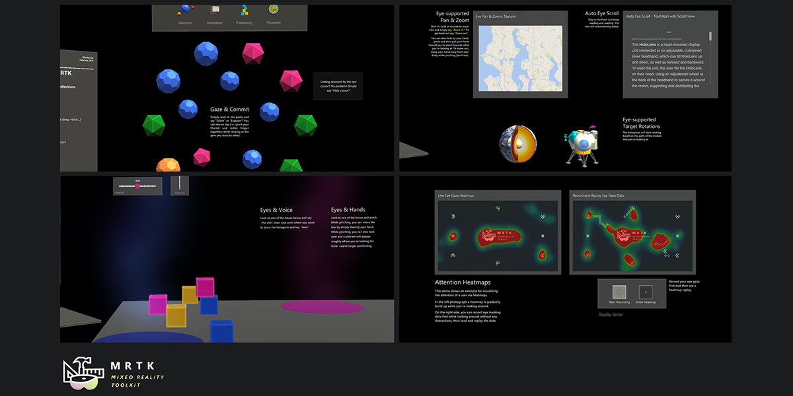

混合现实工具包中的眼动跟踪

HoloLens 2 提供了令人兴奋且功能强大的新输入：眼动跟踪! 眼动跟踪(Eye tracking)功能使用户可以在其整个视野中快速轻松地与全息物体互动，并且可以通过更好地识别用户的意图来使您的系统更智能。查阅Microsoft's Mixed Reality关于HoloLens 2的眼动跟踪的文档了解更多细节，例如解释功能强大的应用程序和对于眼动跟踪在混合现实中的设计准则。
眼动跟踪新手? 没问题！我们创建了许多视频，教程和示例，以帮助您开始使用Mixed Reality Toolkit! 我们建议从探索一些现有的眼动跟踪示例开始，这些示例演示了基于眼动的互动的最佳实践。 然后，您可以使用这些示例将看起来与您相关的部分应用在你的应用程序。 最后，我们还描述了如何使用核心组件设置新场景以使眼动跟踪在您的应用中正常工作。